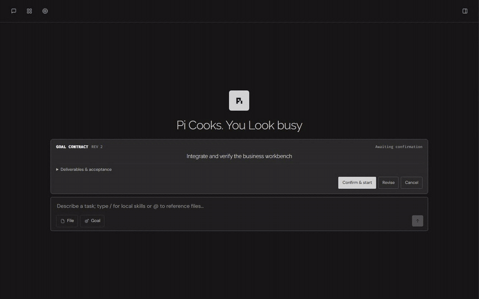
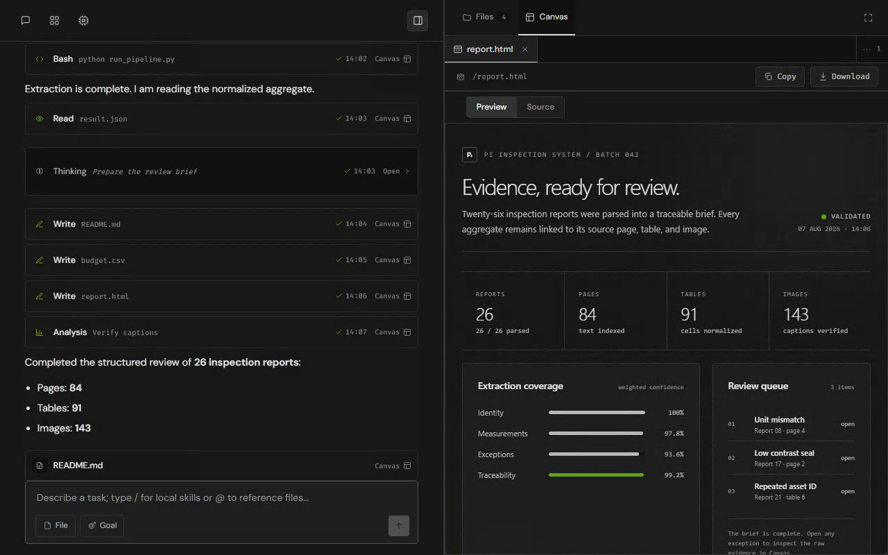
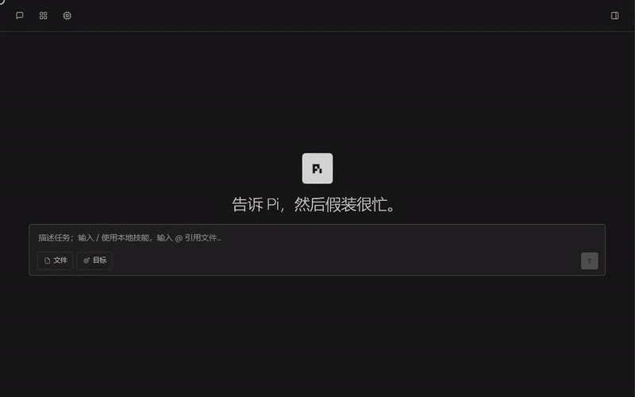
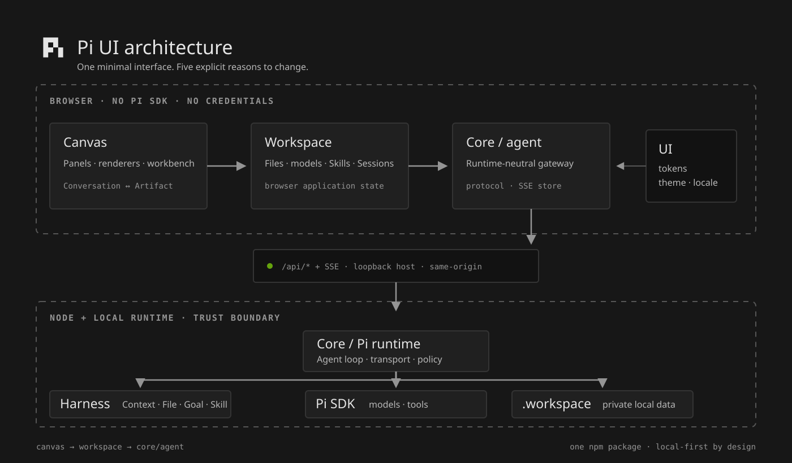

01
Contract-first work
Goal Intent is aligned, authorized, and audited before a complex task can claim completion.
AlignAuthorizeExecuteAudit
Local-first agent workspace
What if your business could redefine the experience without weakening the runtime boundary?
Four product highlights · one trust model
Goal Intent is aligned, authorized, and audited before a complex task can claim completion.
Artifacts and raw Tool evidence open beside the conversation through explicit user actions.
Skills move from draft to validation to controlled packaging without an implicit publish step.
Explicit linkage
Conversation follows the run. Canvas inspects the evidence. Neither side steals focus from the other.
Align → authorize → audit


Artifact-native · theme-aware · inspectable
Canvas keeps one quiet outer grammar while the HTML document owns its typography, evidence layout, and micro-texture.

Reusable without bypassing trust
One trust boundary

Progressive disclosure
Shown now
Final answer, compact trajectory, and the composer—everything needed to continue.
Workspace, drawers, and fullscreen
Raw Tools, diagnostics, and metrics
Skill contribution and naming
Desktop-only · explicit linkage · no decorative shadow · ordinary feedback < 300ms
Every constraint buys something
Keep credentials, Pi SDK, and files inside Node.
The user always knows why Canvas changed.
Long-running work keeps a low cognitive load.
Preserve one dense, predictable two-column model.
Reusable capability cannot bypass review or naming.
Adopters get boundaries without integration overhead.
Quickstart
$ cd /path/to/your-project
$ npx --yes @whyj/pi-ui@latest installCreate .workspace · start UI + Core · open 127.0.0.1:4173
No global install. Press Ctrl+C to stop.
One npm package
Loopback + same-origin
No remote authentication boundary means no 0.0.0.0, LAN, or public host.
Start with the surface. Keep the boundary.
Pi Cooks.
You Look busy.
Bring your theme, locale, Harness, and Skills. Leave the trust model intact.
npx --yes @whyj/pi-ui@latest installSlide 1 of 11
{kind=link}